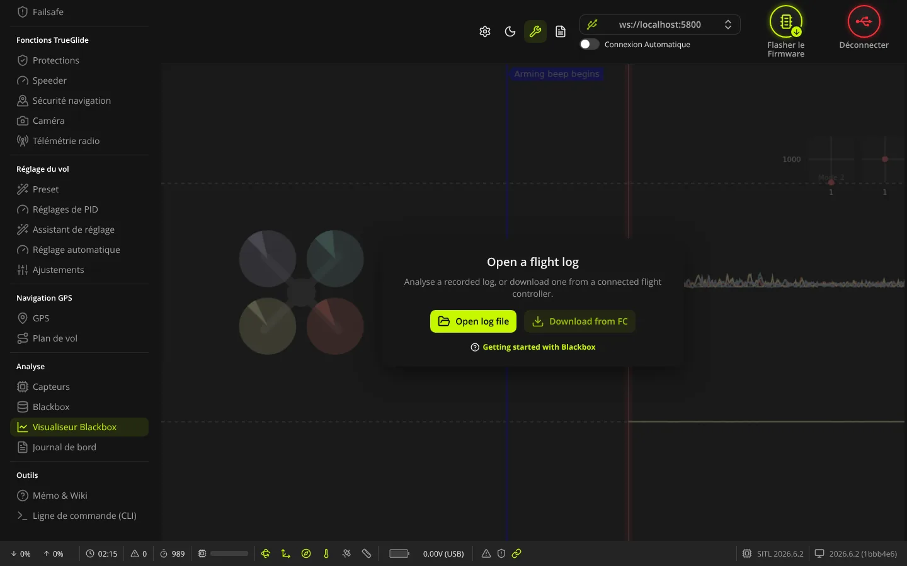
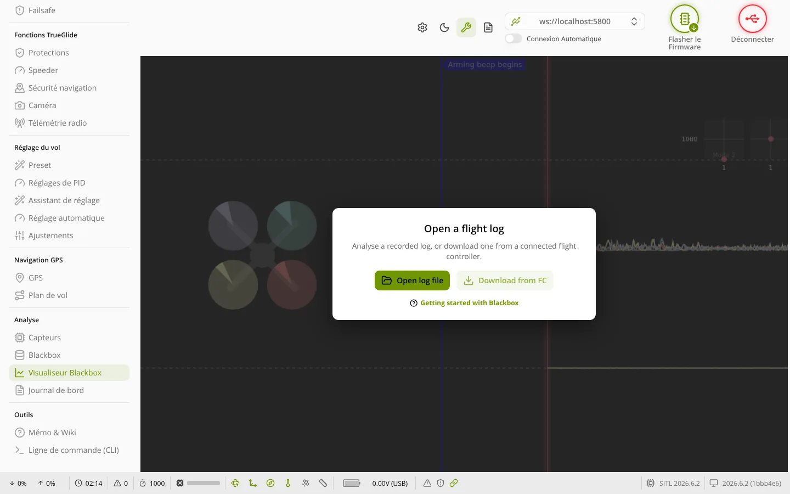

TRUE
TRUEVisualiseur Blackbox
L'onglet Visualiseur Blackbox (groupe « Analyse ») sert à ouvrir un journal de vol blackbox et à l'étudier en courbes : gyro, PID, moteurs, voies radio, spectre de bruit, carte GPS, avec la vidéo du vol si vous l'avez.


Où le trouver
Cet onglet est toujours dans le menu, avec ou sans carte branchée : on peut lire un journal sans drone. Ses textes sont en anglais.
Ouvrir un journal
- Open log file : choisit un fichier sur l'ordinateur. Extensions acceptées :
.bbl,.bfl,.cfl,.log,.txt(journaux) et.json(espaces de travail du visualiseur). - Download from FC : récupère le journal enregistré dans la mémoire de la carte branchée, avec un pourcentage d'avancement. Actif seulement si une carte est connectée et que sa mémoire contient des données. Ce transfert passe par la liaison de configuration : il est lent pour les gros journaux (voir Blackbox, cadre « Mémoire embarquée »).
- Glisser-déposer : un fichier déposé sur l'onglet est ouvert comme journal (
.bbl,.txt,.cfl,.bfl,.log), comme vidéo (.avi,.mov,.mp4,.mpeg) ou comme espaces de travail (.json). - Getting started with Blackbox : lien vers le guide blackbox du site Betaflight (en anglais, nécessite Internet).
Les journaux écrits par TRUEGLIDE indiquent « Betaflight » comme type de firmware dans leur en-tête : c'est voulu, les visualiseurs choisissent leur décodeur d'après ce nom.
Barre du haut (journal ouvert)
- Open log file et le nom du fichier ouvert.
- CSV : exporte les données du journal en tableau.
- GPX : exporte la trace GPS, pour l'ouvrir dans un logiciel de cartes.
- Export Workspaces : enregistre vos réglages d'affichage (espaces de travail) dans un fichier.
- Roue dentée (User Settings) : réglages du visualiseur.
- Clavier (Keyboard Shortcuts) : liste des raccourcis clavier.
Choisir ce qui s'affiche
Les boutons d'affichage (au-dessus des courbes, groupes « View » et « Overlay ») montrent ou cachent :
- Log header (touche H) : l'en-tête du journal, c'est-à-dire les réglages de la carte au moment du vol ;
- Table (touche T) : les valeurs au point de lecture ;
- Video : la vidéo chargée ;
- Craft : le dessin du drone et de ses moteurs ;
- Sticks : la position des manches ;
- Analyser (touche A) : le spectre de fréquences (bruit) ;
- Map : la carte de la trace GPS.
La barre de défilement en bas sert à se déplacer dans le vol. Les espaces de travail mémorisent un choix de courbes : renommez-les ou enregistrez-y l'affichage en cours avec leurs boutons.
Caler la vidéo sur le journal
Après avoir déposé une vidéo, les boutons de synchronisation déplacent le journal plus tôt (Move log earlier) ou plus tard (Move log later), le font commencer à l'instant affiché (Start log here), ou permettent de saisir un décalage (Enter a time offset). Smart Sync (Alt+M) cherche le calage seul.
Voir aussi
- Blackbox : régler l'enregistrement et vider la mémoire de la carte.
- Mémo & Wiki, page « Analyse des journaux » : l'outil d'analyse en français fourni avec le firmware, et le sens des modes debug
POWER_GUARDetMOTOR_HEALTH.